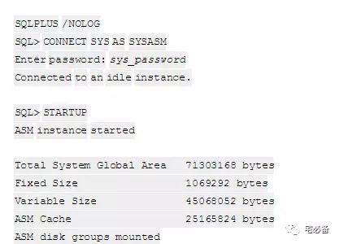
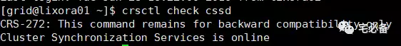

ASM Instances管理
2017-10-19 Oracle 宅必备
这个专题讲ASM相关的内容
内容主要来自官方文档，加上一些自己的理解及实践
这节将ASM实例的一些参数，这节讲如何管理ASM实例
1. 使用Server Control Utility (SRVCTL)管理ASM
可以使用SRVCTL做如下操作:
-
从OCR中添加和删除ASM记录
-
启用，禁用，启动和停止ASM实例
-
显示ASM实例的配置和状态
srvctl add asm -n node_name -i +asm_instance_name -o oracle_home
具体可参见如下链接:
2. 启动ASM实例
启动ASM实例不同于Oracle数据库的启动那样mount和open数据文件，它会首先启动实例然后挂在磁盘组
-
ASM_DISKGROUPS参数中的磁盘组
-
Cluster Synchronization Services (CSS)服务需要的磁盘组
-
OCR需要的磁盘组
-
存储SPFILE文件需要的磁盘组
当上面列表中没有磁盘组时，ASM实例会启动起来，但不会挂载任何磁盘组
之后可以通过命令ALTER DISKGROUP…MOUNT来挂载
mount force
当normal，high级别的磁盘组中有磁盘损坏的话，ASM 提供 mount force命令来强制mount磁盘组
前提是磁盘组中有至少一份完整的数据文件拷贝
注意：如果磁盘组中的磁盘都是好的，这时使用mount force，会导致命令失败
2.1 startup 参数
我们使用startup命令来启动ASM实例
和Oracle数据库启动一样，startup有一些参数可以使用
FORCE
在启动ASM之前先执行 shutdown abort命令
MOUNT or OPEN
开启ASM实例并mount磁盘组，这是默认参数
NOMOUNT
开启ASM实例但是不mount磁盘组
RESTRICT
开启ASM实例并只允许具有 CREATE SESSION 和 RESTRICTED SESSION 系统权限的用户登入
可以用在 mount,nomount,open参数后面
下图为一个开启ASM实例的例子

2.2 RESTRICT模式
当ASM以RESTRICT模式启动时，磁盘组是以RESTRICT模式挂载的，这种情况下数据库无法访问ASM磁盘组，便于维护
startup mount RESTRICT
维护结束后需要dismout然后重新mount磁盘组
2.3 Cluster Synchronization Services(CSS)服务
该服务进程为ASM提供集群服务，ASM和数据库实例间的通信以及其他的一些服务，在ASM启动前需确保其开启状态
检查CSS是否启动
crsctl check cssd

开启CSS服务
使用root 用户登录并确保$ORACLE_HOME/bin 在环境变量中
localconfig add
3. 关闭ASM实例
ASM实例的关闭包括dismount磁盘组和关闭实例两步
关闭ASM前需要先关闭相关的数据库实例
我们使用shutdown命令来关闭ASM实例，它有如下参数:
NORMAL
ASM 等待现有SQL执行完成后才会dismount磁盘组，然后需要等到所有用户断开连接才会关闭实例
如果有数据库实例连接到ASM实例，则该命令失败，ASM实力仍为running状态
这是默认的参数
IMMEDIATE 或TRANSACTIONAL
ASM 等待现有SQL执行完成后才会dismount磁盘组，然后不需要等到所有用户断开连接才会关闭实例
如果有数据库实例连接到ASM实例，则该命令失败，ASM实力仍为running状态
ABORT
ASM实例立刻关闭而不需要dismount磁盘组
下次启动时会进行ASM实例恢复
如有数据库实例连接在ASM实例，则数据库也会关闭
4. ASM后台进程
ASM后台进程主要有下面几个
-
ARBn 进程负责磁盘组重新平衡，同一时间可以有很多该进程，依次为ARB0 ARB1….
-
ASMB 进程运行在数据库端用来和ASM进程通信以及管理存储，ASM端运行cp命令或者使用spfile启动时会在ASM端出现
-
GMON进程负责维护磁盘组中的磁盘成员关系
-
MARK 进程负责将写入损坏磁盘失败的AU标记未stale
RBAL进程运行在数据库端负责打开ASM磁盘，运行在ASM端负责重新平衡磁盘组
另外还有一些通用的进程，如DBWn ,LGWR ,PMON ,SMON
还有一些为完成特别任务才有的进程，如 Snnn